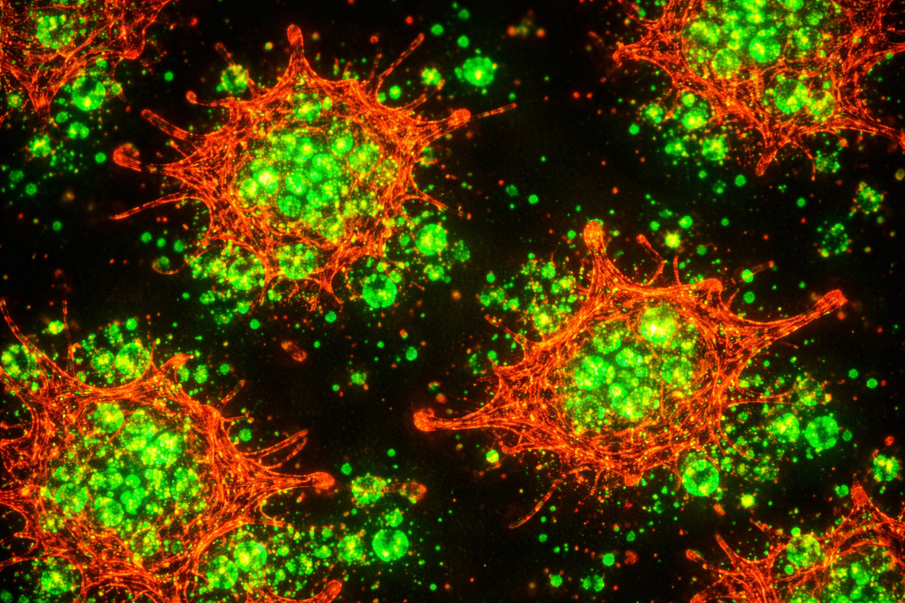
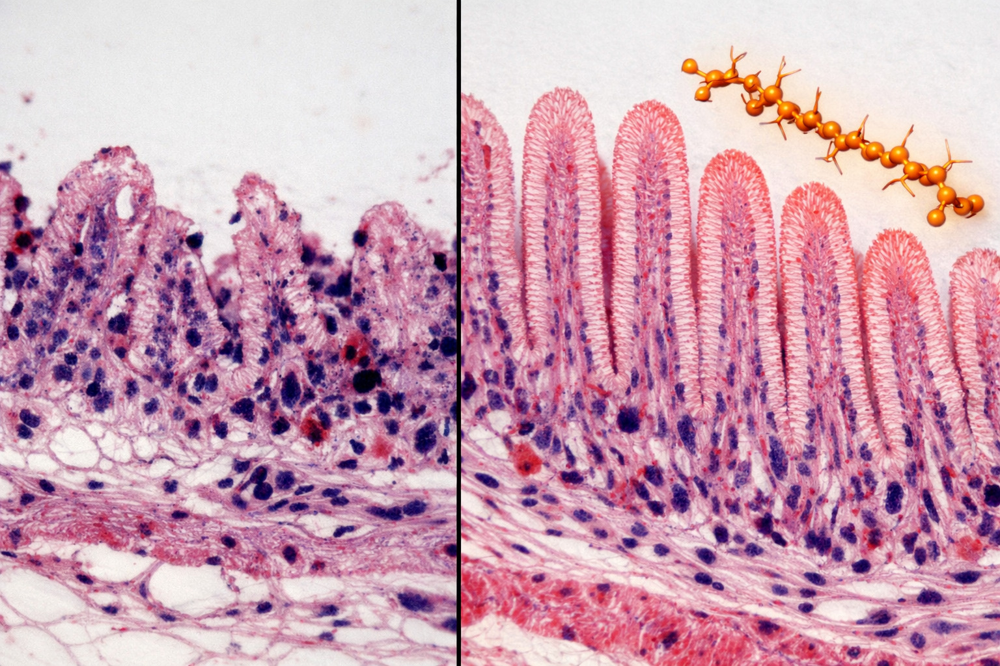

🔬 活力旺® 白蝦專利配方 – 三大機密載體
🧪 1. 「重組蛋白酶」—— 發酵複合酶製劑 (原力素)
降FCR、促生長 · 仿生發酵技術 · FCR 0.59→0.30 · 每噸飼料省49.3%
🧬 分子機轉：
重組蛋白酶源自發酵豆粕/玉米發酵蛋白，顯著提高蛋白質消化吸收率；合生系統中添加發酵米糠可促進營養同化，提高生長速率與最終體重。Gonçalves等 (2024) 證實飼料限制搭配合生系統，FCR降低49.3%，運營成本下降20.2% (PMID: 38481478)。
+10%
WSSV攻毒存活率提升
WSSV攻毒存活率提升
-95%
TCBS弧菌菌落數減少
TCBS弧菌菌落數減少
✓
SGS毒理測試安全無毒
SGS毒理測試安全無毒

重組蛋白酶 · 促進白蝦快速生長

WSSV攻毒 · 存活率+10%

TCBS · 弧菌減少95%
🧬 2. 「小核酸」—— 免疫調控肽
存活率↑76%、抗弧菌 · 枯草芽孢桿菌+發酵紙莎草葉 · 副溶血弧菌感染存活率43%→76%
🧬 表觀遺傳調控：
活力旺小核酸片段靶向免疫相關基因，上調Hsp70、LGBP、β-GBP-HDL、Crustin、Lysozyme表達。飼料中添加0.4%枯草芽孢桿菌使感染存活率提升至76.7% (水生生物學報, 2025)。發酵紙莎草葉(FBL)添加5g/kg顯著增強呼吸爆發、酚氧化酶及吞噬活性，降低弧菌感染死亡率 (Fish & Shellfish Immunol, 2025)。
NAD+↑
促進腸道絨毛發育
促進腸道絨毛發育
免疫↑
間接增強抗病力
間接增強抗病力

血淋巴免疫細胞 · 吞噬活性提升

小核酸 · 提升非特異性免疫力
🌿 3. 「褐藻素」—— 藻源性抗氧化複合物
抗氧化、抗緊迫、腸道健康 · Nrf2路徑 · 總抗氧化能力↑33%
🌿 抗氧化與腸道屏障：
褐藻素透過激活Nrf2/KEAP1抗氧化反應元件，提升SOD、T-AOC活性，降低肝胰腺AST/ALT。枯草芽孢桿菌組血淋巴SOD顯著提高，總抗氧化能力提升33% (水生生物學報, 2025)。發酵紙莎草葉顯著改善腸道絨毛結構與微生物組成，增強養分吸收效率 (FSI, 2025)。
82.7%
對哈氏弧菌存活率
對哈氏弧菌存活率
抗菌肽↑
上調抗菌肽表達
上調抗菌肽表達

腸道絨毛組織切片 · 密度與長度提升

褐藻素 · 維護腸道屏障
| 效能項目 | 對應載體 | 實證績效 | 文獻來源 |
|---|---|---|---|
| 降FCR、促生長 | 重組蛋白酶 | FCR 0.59→0.30 | PMID:38481478 |
| 存活率↑、抗弧菌 | 小核酸 | 43%→76.7% | 水生生物學報2025 |
| 抗氧化、腸道健康 | 褐藻素 | SOD↑33%, 腸絨毛改善 | FSI 2025 |
| 免疫相關基因表達 | 小核酸 | Hsp70/LGBP/Crustin ↑ | DOI:10.3724/1000-3207.2025.0050 |
| 總效益提升 | 全配方協同 | 效益↑81.5%~144.8% | 廣東飼料2024 |